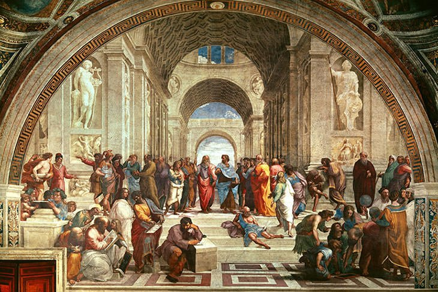
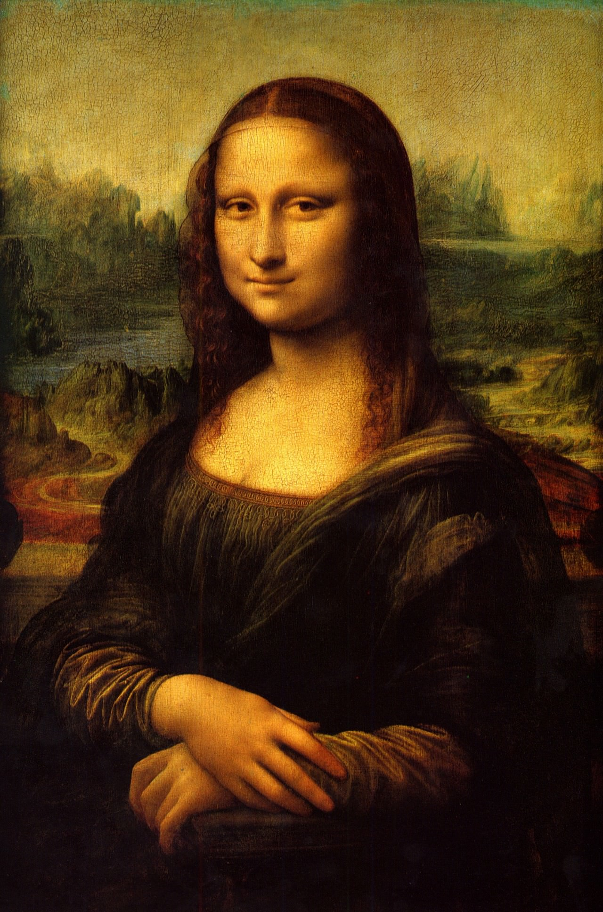

<DOCTYPE! html>
<html lang="en">
<head>
  <meta charset="utf-8">
  <title>Basic html Content Page</title>
  <link rel="stylesheet" type="text/css" href="CSS-Template.css">
  <style>section
	{
		float: left;
		width: calc(80% - 100px);
		margin: 0 50px 50px 50px;
	}
	</style>
</head>
<body class="hello" background="images/2.jpg">

 <header>
   
    <h1>The Renaissance</h1>
	<h2>Architecture, Paintings, and Statues </h2>
	<h3>Learn About the the Renaissance!</h3>
  </header>
  <nav>

    <ul>
	  <li><a href="HTML-HomePage.html">Home</a></li>
	  <li><a href="HTML-ContentPage.html">Content</a></li>
	  <li><a href="HTML-VideoPage.html">Videos</a></li>
	  <li><a href="HTML-LinksPage.html">Links</a></li>
    </ul>
  </nav>
  <section>
    What is the Renaissance?
	<hr>
    <footer>The Renaissance is a European Cultural movement that revolutionized art, science, and the solely the way people think and reason.</footer>
    <article>Art</article>
		
    <footer>"School Of Athens" A crowd of philosophers, acclaimed as Artist Raphael's masterpiece <footer>
Year painted: 1509–1511
<hr>
	</footer>
		
	<footer>"Mona Lisa" A portrait of what is thought to be Lisa Gherardini. Some of have speculated that this a self portrait of the painter Leonardo Da Vinci himself </footer>
	Years painted: 1503
	<hr>
  
  <article> "Last Supper"  The painting represents the scene of the Last Supper of Jesus with his apostles Painted: 1490
  </section>
  <footer>
    
		<hr>
	<p> Phone Number - 754-654-2042
	<br><a href="mailto:s20046760@student.duvalschools.org" target="_top">Mail to TH. Inc Mail</a>
	<br> Address - 1231 Pomerol Drive, FL 23122
  </footer>
</body>
</html>